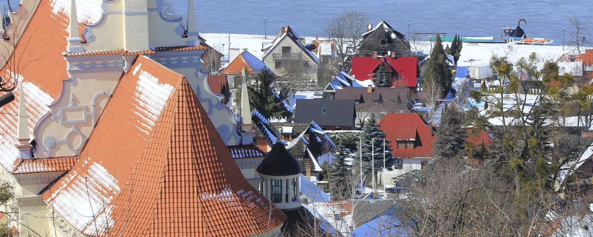

Kazimierz Dolny
Kazimierz leży w województwie lubelskim, w powiecie puławskim, nad Wisłą w zachodniej części Płaskowyżu Nałęczowskiego. Jest bardzo popularnym miejscem o wybitnych walorach turystyczno-wypoczynkowych.